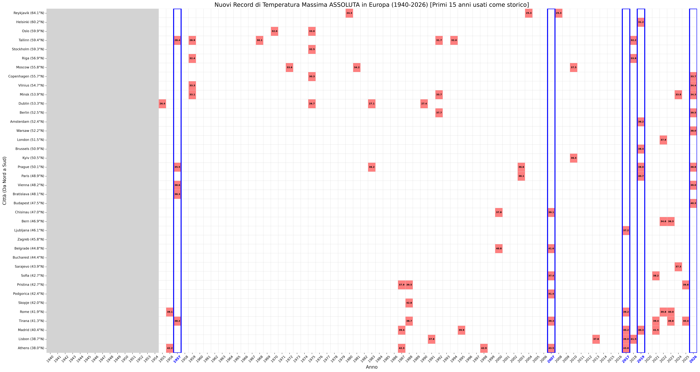
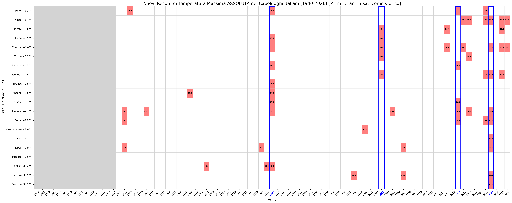

Analisi climatica automatizzata dei record di calore e siccità in Europa e Italia (1940 - Oggi).
Questi grafici mostrano la storia climatica evidenziando unicamente gli anni in cui è stato battuto un record storico assoluto.

Anni in cui le capitali europee hanno battuto il loro record storico di temperatura massima annua.

Anni in cui i capoluoghi italiani hanno battuto il loro record storico di temperatura massima annua.